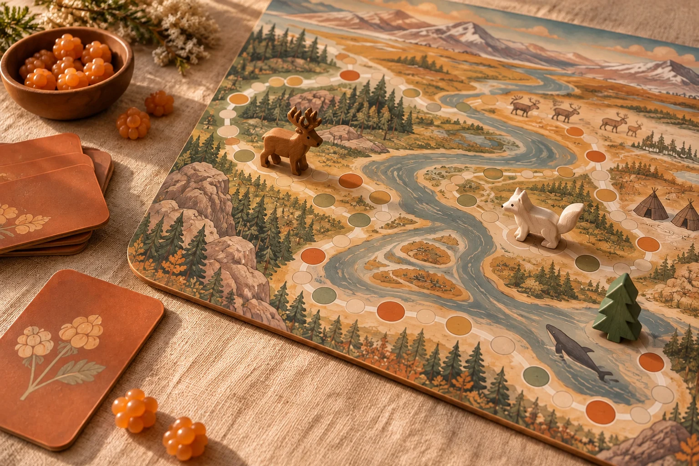

Путешествие на карте
20 клеток на игровом поле: тайга, северные стоянки и развилки. Фишка идёт по основному маршруту, а пунктир показывает срезы. Финиш — Муравленко.
Настольное путешествие для всей семьи
От тайги до тундры — по карте Сибири к Муравленко. Выбирайте дорогу, отвечайте на простые вопросы и узнавайте Ямал вместе.

01 / Знакомство
«Морошка: Северный маршрут» — семейная игра-ходилка. Здесь интересно и тому, кто вырос на Ямале, и тому, кто впервые слышит о Муравленко. Для старта достаточно любопытства: у каждого вопроса три варианта ответа.
20 клеток на игровом поле: тайга, северные стоянки и развилки. Фишка идёт по основному маршруту, а пунктир показывает срезы. Финиш — Муравленко.
Вопросы о городах, природе и культуре. После ответа появляется короткое объяснение. Ошибка тоже приносит новое знание, но фишка остаётся на месте.
На развилке можно выбрать срез. Верный ответ добавит к обычному шагу только одну или две клетки. Если ошибётесь, останетесь на месте.
Поле, которое хочется рассматривать
Реки, тайга и северное побережье на нарисованной карте. 20 клеток маршрута, три среза и Муравленко на финише.
Карта — художественная игровая схема.
Открыть игровое поле02 / Две колоды, два пути
Зелёные карточки знакомят с Ямалом. Оранжевые посвящены Муравленко: встречаются на основном пути и на всех срезах. Вопросы простые, без таймера: можно спокойно прочитать их вслух.
А · Обдорск
Б · Мангазея
В · Берёзов
Ответьте верно — и откройте короткий путь через Север.
03 / Правила без долгой подготовки
Все начинают на первой клетке без ресурсов. Игроки ходят по очереди, а сайт считает шаги и показывает, кому передать ход.
Обычно доступен основной путь. На клетках 04, 09 и 14 доступны срезы: мост, настил и тропа по гриве.
На основном пути чередуются темы Ямала и Муравленко; на срезе — вопрос о городе. Выберите один из трёх ответов и прочитайте объяснение.
Верный ответ — ровно одна клетка. На срезе он добавит ещё +1 или +2; ошибка оставит фишку на месте.
Ресурсов и обязательных трат нет. После хода каждого игрока начинается следующий раунд.
Первый финиш завершает текущий раунд: у всех поровну ходов. Максимум 19 раундов. Сравниваем продвижение, затем число верных ответов. При полном равенстве победа общая.
04 / Будущая настолка
Плоское раскрашенное поле, фишки, карточки и немного свободного вечера. Онлайн-версия помогает попробовать правила перед тем, как сделать физическую игру.
Разложить игру05 / Ещё немного ясности
Нет. Вопросы начального уровня, с тремя вариантами. Часть — о повседневной жизни и культуре, часть — о городе. Читать можно вместе, а ответ выбирает игрок, чей сейчас ход.
На клетках 04, 09 и 14 можно выбрать вопрос о Муравленко. Мост и тропа добавляют +1 клетку, болотный настил +2. Бонус прибавляется к обычному шагу только за верный ответ; при ошибке остаётесь на месте. Одна попытка на развилке, никаких ресурсов.
Это художественная игровая схема Западной Сибири на тему Ямала. Реки и северные ландшафты создают ощущение места, но расстояния и расположение точек маршрута условны. Для навигации карта не предназначена.
В физической версии верный ответ передвигает фишку на одну клетку; неверный оставляет её на месте. На развилках дополнительный срез открывается только за верный ответ.
Да, игра автоматически сохраняется в этом браузере после каждого действия. На другом устройстве или после очистки данных браузера сохранение недоступно.
Использованы материалы городского издания «Муравленко 24», справочника «Мой город», Окружного центра национальных культур и Окружного дома ремёсел. После ответа на карточке есть ссылка на источник. Открыть все вопросы и ответы. События и правила движения придуманы для игры.
Компания собралась?
Откройте поле. Выберите имена. Сделайте первый ход.
Отправиться в путешествие